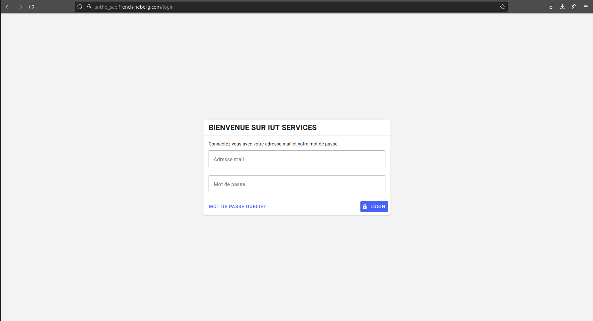

Page Connexion
Identifiants de connexion
Localisez la section de connexion. Vous y trouverez deux champs obligatoires :
- Adresse mail : Entrez votre adresse e-mail associée à votre compte.
- Mot de passe : Saisissez votre mot de passe. Assurez-vous de respecter la casse (majuscules et minuscules) lors de la saisie du mot de passe.
Appuyez ensuite sur le bouton Login pour vous connecter.

Options de connexion
Note
En fonction de votre expérience, vous pourriez rencontrer des options telles que Mot de passe oublié. Elle vous guidera à travers le processus de récupération du mot de passe en cas d'oubli. Vous pouvez également rencontrer comme problème Adresse mail ou mot de passe incorrect. Dans ce cas, votre mot de passe ou adresse mail est invalide. Vérifiez vos informations et réessayez.
Problèmes de connexion
Si vous rencontrez des problèmes pour accéder à votre compte, utilisez l'option Mot de passe oublié pour réinitialiser votre mot de passe. Dans la barre "Adresse mail", entrez l’adresse e-mail de votre compte puis cliquez sur Mot de passe oublié. Un mail vous est normalement envoyé.
Sécurité
Attention
Votre sécurité est notre priorité. Assurez-vous de ne jamais partager vos informations de connexion avec des tiers. Si vous utilisez un ordinateur partagé, veillez à vous déconnecter après utilisation.